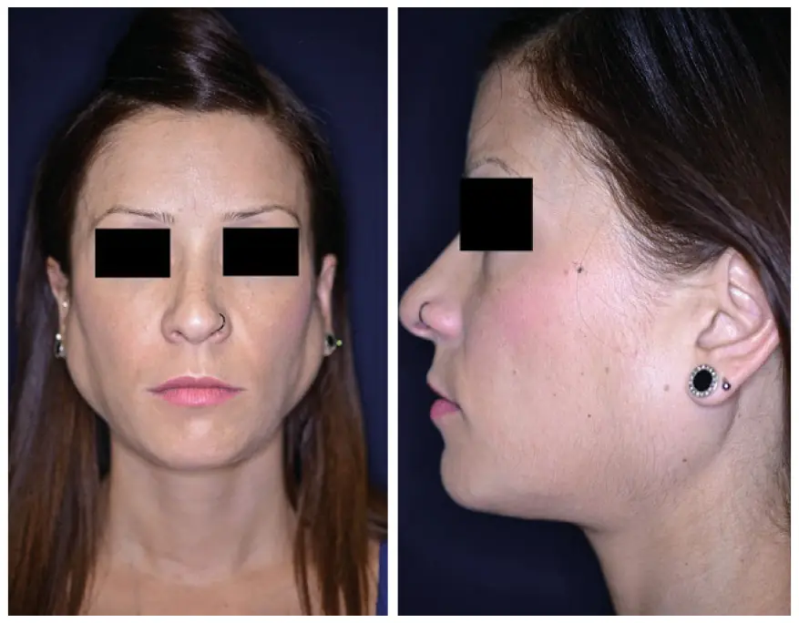

نسخه استخراجشده؛ ترجمه یا تأیید علمی انجام نشده است. وضعیت: captured
خانم ۲۸ سالهای با اختلال پانیک هر روز آلپرازولام میخورد و برای جراحی دندان عقل آمده است. همکارت میخواهد برای درد پس از جراحی کدئین بنویسد. این ترکیب چه خطری دارد؟
اختلالات اضطرابی شایعترین بیماری روانی جامعهاند. اضطراب وقتی بیماری است که زیاد و مهارنشدنی باشد، محرک مشخصی نداشته باشد و زندگی را مختل کند.
بنزودیازپینها ستون درمان دارویی اضطراباند. اپیوئیدها، باربیتوراتها، داروهای روانپزشکی دیگر، سایمتیدین و اریترومایسین اثر مهاری آنها را بر دستگاه عصبی مرکزی تشدید میکنند. آلپرازولام بهآسانی وابستگی میدهد و قطعش دشوار است.
اشتباه رایج: دادن اپیوئید با دوز معمول به بیماری که بنزودیازپین میخورد. اپیوئید را با احتیاط و دوز کمتر بده، و اگر برای جلسهی درمان هم آرامبخش لازم است، پیش از آن با پزشک بیمار مشورت کن.
وزن ۸۵٪ وزن ایدهآل یا کمتر، ترس شدید از چاق شدن و تصویر بدنی مختل. بیمار با وجود لاغری شدید گرسنگی و خستگی را انکار میکند. در موارد پیشرفته برادیکاردی، افت فشار و هیپوترمی دیده میشود. اختلال الکترولیت ممکن است آریتمی بطنی و مرگ ناگهانی بدهد.

وزن بیمار معمولاً طبیعی یا بالاتر است. دورههای پرخوری با استفراغ عمدی، مسهل یا ادرارآور جبران میشوند و بیمار آن را پنهان میکند. دهان گاهی نخستین جایی است که بیماری را لو میدهد:
پس از استفراغ: بیمار بلافاصله مسواک نزند؛ دهان را با محلول بیکربنات سدیم بشوید یا شیر بنوشد. فلوراید و خمیردندان ضدحساسیت بده. ترمیمهای پیچیده را تا شکستن چرخهی پرخوری و استفراغ عقب بینداز؛ بعد با کامپوزیت و تراش کم شروع کن.